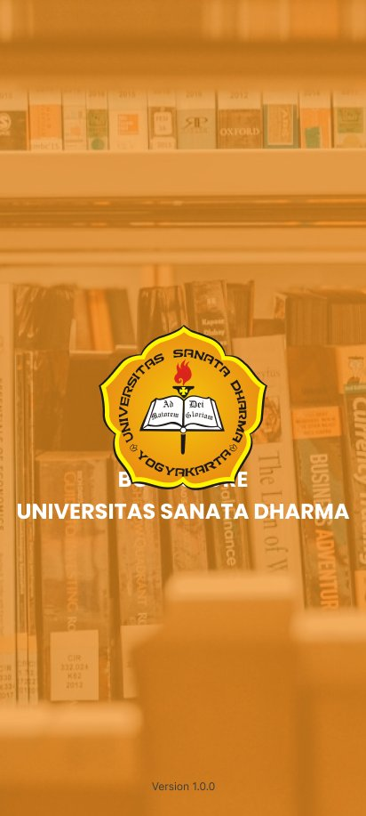
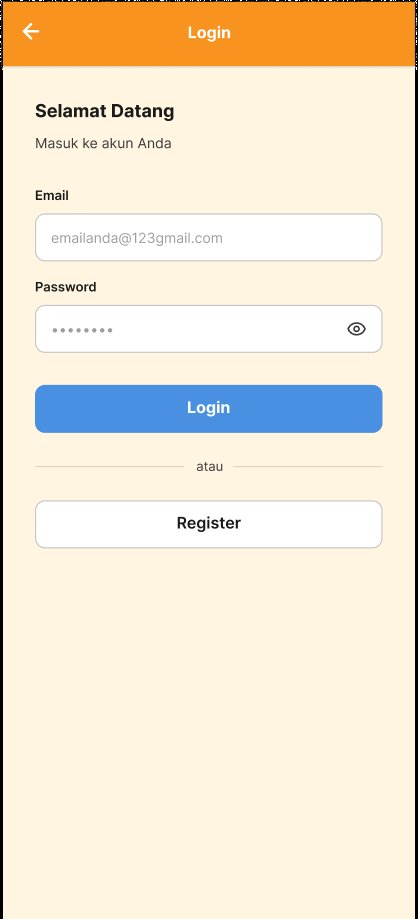
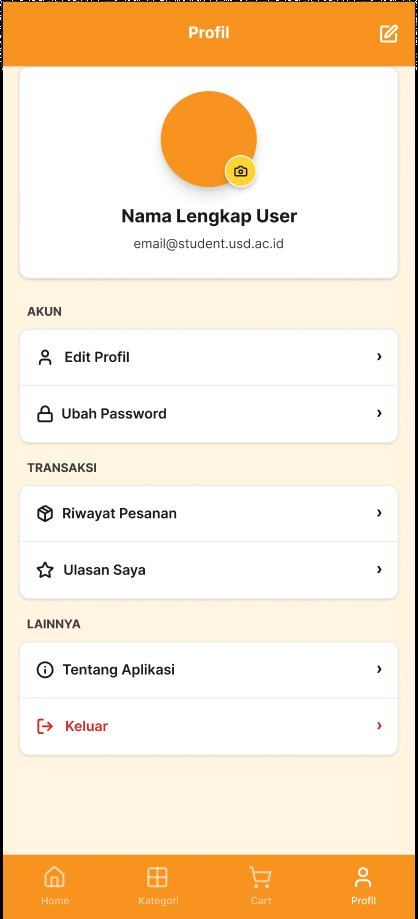

PROJECT 01 — Mar-Jul 2026
Bookstore App
Fullstack Mobile Developer & UI/UX Designer
Aplikasi toko buku digital, dari riset dan wireframe di Figma sampai aplikasi Flutter yang terhubung ke Firebase untuk pencarian buku, keranjang belanja, dan manajemen akun pengguna.
FLUTTERFIREBASEFIGMA